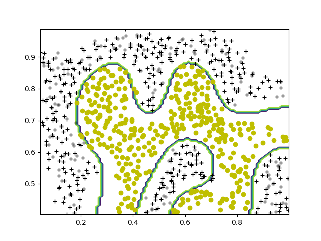
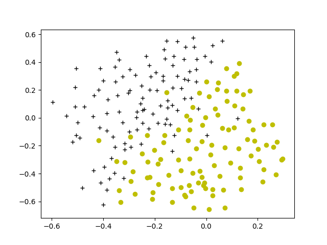
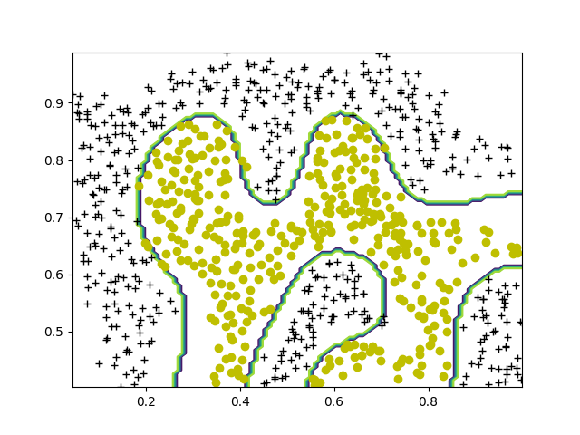
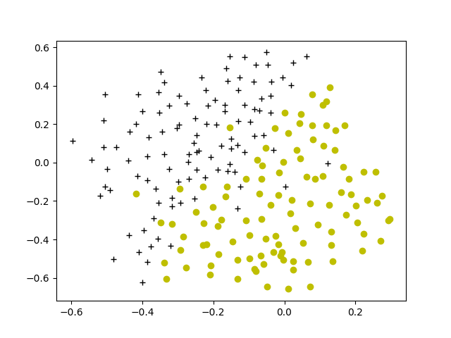

机器学习作业第六周
机器学习
这周是SVM,其实SVM部分是没有什么难点,主要问题是在于自定义核函数在sklean中比较蛋疼.
难点总结
在sklean中自定义的核函数必须要可以计算两个相同维数的矩阵,并返回一个新的方阵.
比如我自定义的高斯核函数,如果接受两个[800,2]的矩阵,那么需要返回一个[800,800]的矩阵,代码才可以正常运行.
ex6.py
from numpy.core import *
from scipy.io import loadmat
from sklearn import svm
import matplotlib.pyplot as plt
from fucs6 import plotData, visualizeBoundaryLinear, gaussianKernel, \
visualizeBoundary, dataset3Params
if __name__ == "__main__":
# Machine Learning Online Class
# Exercise 6 | Support Vector Machines
#
# Instructions
# ------------
#
# This file contains code that helps you get started on the
# exercise. You will need to complete the following functions:
#
# gaussianKernel.m
# dataset3Params.m
# processEmail.m
# emailFeatures.m
#
# For this exercise, you will not need to change any code in this file,
# or any other files other than those mentioned above.
#
# =============== Part 1: Loading and Visualizing Data ================
# We start the exercise by first loading and visualizing the dataset.
# The following code will load the dataset into your environment and plot
# the data.
#
print('Loading and Visualizing Data ...')
# Load from ex6data1:
# You will have X, y in your environment
data = loadmat('ex6data1.mat')
X = data['X'] # [51,2]
y = data['y'] # [51,1]
# Plot training data
plotData(X, y)
print('Program paused. Press enter to continue.')
# ==================== Part 2: Training Linear SVM ====================
# The following code will train a linear SVM on the dataset and plot the
# decision boundary learned.
#
# Load from ex6data1:
# You will have X, y in your environment
# load('')
print('Training Linear SVM ...')
# You should try to change the C value below and see how the decision
# boundary varies (e.g., try C = 1000)
C = 1
model = svm.SVC(C, kernel='linear', tol=1e-3, max_iter=20)
model.fit(X, y.ravel())
visualizeBoundaryLinear(X, y, model)
print('Program paused. Press enter to continue.')
# =============== Part 3: Implementing Gaussian Kernel ===============
# You will now implement the Gaussian kernel to use
# with the SVM. You should complete the code in gaussianKernel.m
#
print('Evaluating the Gaussian Kernel ...')
x1 = array([1, 2, 1]).reshape(1, -1)
x2 = array([0, 4, -1]).reshape(1, -1)
sigma = 2
sim = gaussianKernel(x1, x2, sigma)
print('Gaussian Kernel between x1 = [1; 2; 1], x2 = [0; 4; -1], sigma = {} :\
\n\t{}\n(for sigma = 2, this value should be about 0.324652)'.format(sigma,
sim))
print('Program paused. Press enter to continue.')
# =============== Part 4: Visualizing Dataset 2 ================
# The following code will load the next dataset into your environment and
# plot the data.
#
print('Loading and Visualizing Data ...')
# Load from ex6data2:
# You will have X, y in your environment
data = loadmat('ex6data2.mat')
X = data['X'] # tpye:ndarray
y = data['y'] # tpye:ndarray
# Plot training data
plotData(X, y)
print('Program paused. Press enter to continue.')
# ========== Part 5: Training SVM with RBF Kernel (Dataset 2) ==========
# After you have implemented the kernel, we can now use it to train the
# SVM classifier.
#
print('Training SVM with RBF Kernel (this may take 1 to 2 minutes) ...')
# Load from ex6data2:
# You will have X, y in your environment
# load('ex6data2.mat')
# SVM Parameters
C = 1
sigma = 0.1
# We set the tolerance and max_passes lower here so that the code will run
# faster. However, in practice, you will want to run the training to
# convergence.
def mykernel(x1, x2): return gaussianKernel(x1, x2, sigma)
model = svm.SVC(C, kernel=mykernel) # type:SVC
model.fit(X, y.ravel())
visualizeBoundary(X, y, model)
print('Program paused. Press enter to continue.')
# =============== Part 6: Visualizing Dataset 3 ================
# The following code will load the next dataset into your environment and
# plot the data.
#
print('Loading and Visualizing Data ...')
# Load from ex6data3:
# You will have X, y in your environment
data = loadmat('ex6data3.mat')
X = data['X'] # tpye:ndarray
y = data['y'] # tpye:ndarray
Xval = data['Xval'] # tpye:ndarray
yval = data['yval'] # tpye:ndarray
# Plot training data
plotData(X, y)
print('Program paused. Press enter to continue.')
# ========== Part 7: Training SVM with RBF Kernel (Dataset 3) ==========
# This is a different dataset that you can use to experiment with. Try
# different values of C and sigma here.
#
# Load from ex6data3:
# You will have X, y in your environment
# load('ex6data3.mat')
# Try different SVM Parameters here
C, sigma = dataset3Params(X, y, Xval, yval)
# Train the SVM
def mykernel(x1, x2): return gaussianKernel(x1, x2, sigma)
model = svm.SVC(C, kernel=mykernel) # type:SVC
model.fit(X, y.ravel())
visualizeBoundary(X, y, model)
print('Program paused. Press enter to continue.')
plt.show()效果


  
  
➜ week6 python3 ex6.py
Loading and Visualizing Data ...
Program paused. Press enter to continue.
Training Linear SVM ...
/home/zqh/.local/lib/python3.6/site-packages/sklearn/svm/base.py:244: ConvergenceWarning: Solver terminated early (max_iter=20). Consider pre-processing your data with StandardScaler or MinMaxScaler.
% self.max_iter, ConvergenceWarning)
Program paused. Press enter to continue.
Evaluating the Gaussian Kernel ...
Gaussian Kernel between x1 = [1; 2; 1], x2 = [0; 4; -1], sigma = 2 :
[[0.32465247]]
(for sigma = 2, this value should be about 0.324652)
Program paused. Press enter to continue.
Loading and Visualizing Data ...
Program paused. Press enter to continue.
Training SVM with RBF Kernel (this may take 1 to 2 minutes) ...
Program paused. Press enter to continue.
Loading and Visualizing Data ...
Program paused. Press enter to continue.
Program paused. Press enter to continue.ex6_spam.py
from numpy.core import *
from scipy.io import loadmat
from sklearn import svm
import matplotlib.pyplot as plt
from fucs6 import gaussianKernel, dataset3Params, processEmail,\
readFile, emailFeatures, getVocabList
if __name__ == "__main__":
# Machine Learning Online Class
# Exercise 6 | Spam Classification with SVMs
#
# Instructions
# ------------
#
# This file contains code that helps you get started on the
# exercise. You will need to complete the following functions:
#
# gaussianKernel.m
# dataset3Params.m
# processEmail.m
# emailFeatures.m
#
# For this exercise, you will not need to change any code in this file,
# or any other files other than those mentioned above.
#
# ==================== Part 1: Email Preprocessing ====================
# To use an SVM to classify emails into Spam v.s. Non-Spam, you first need
# to convert each email into a vector of features. In this part, you will
# implement the preprocessing steps for each email. You should
# complete the code in processEmail.m to produce a word indices vector
# for a given email.
print('Preprocessing sample email (emailSample1.txt)')
# Extract Features
file_contents = readFile('emailSample1.txt')
word_indices = processEmail(file_contents)
# Print Stats
print('Word Indices: ')
print(word_indices)
print('\nProgram paused. Press enter to continue.')
# pause
# ==================== Part 2: Feature Extraction ====================
# Now, you will convert each email into a vector of features in R^n.
# You should complete the code in emailFeatures.m to produce a feature
# vector for a given email.
print('Extracting features from sample email (emailSample1.txt)')
# Extract Features
file_contents = readFile('emailSample1.txt')
word_indices = processEmail(file_contents)
features = emailFeatures(word_indices)
# Print Stats
print('Length of feature vector: {}'.format(size(features, 0)))
print('Number of non-zero entries: {}'.format(sum(features > 0)))
print('Program paused. Press enter to continue.')
# pause
# =========== Part 3: Train Linear SVM for Spam Classification ========
# In this section, you will train a linear classifier to determine if an
# email is Spam or Not-Spam.
# Load the Spam Email dataset
# You will have X, y in your environment
data = loadmat('spamTrain.mat')
X = data['X']
y = data['y']
print('Training Linear SVM (Spam Classification)')
print('(this may take 1 to 2 minutes) ...')
C = 0.1
model = svm.SVC(C=C, kernel='linear')
model.fit(X, y.ravel())
p = model.predict(X)
print('Training Accuracy: {}%'.format(mean(array(p == y)) * 100))
# =================== Part 4: Test Spam Classification ================
# After training the classifier, we can evaluate it on a test set. We have
# included a test set in spamTest.mat
# Load the test dataset
# You will have Xtest, ytest in your environment
data = loadmat('spamTest.mat')
Xtest = data['Xtest']
ytest = data['ytest']
print('Evaluating the trained Linear SVM on a test set ...')
p = model.predict(Xtest)
print('Test Accuracy: {}%'.format(mean(array(p == ytest)) * 100))
# ================= Part 5: Top Predictors of Spam ====================
# Since the model we are training is a linear SVM, we can inspect the
# weights learned by the model to understand better how it is determining
# whether an email is spam or not. The following code finds the words with
# the highest weights in the classifier. Informally, the classifier
# 'thinks' that these words are the most likely indicators of spam.
#
# Sort the weights and obtin the vocabulary list
temp = model.coef_.copy().ravel()
weight = argsort(temp.ravel())[::-1]
vocabList = getVocabList()
print('Top predictors of spam: ')
for i in range(15):
print(' {:^15}\t{} '.format(vocabList[weight[i]], weight[i]))
print('\nProgram paused. Press enter to continue.')
# =================== Part 6: Try Your Own Emails =====================
# Now that you've trained the spam classifier, you can use it on your own
# emails! In the starter code, we have included spamSample1.txt,
# spamSample2.txt, emailSample1.txt and emailSample2.txt as examples.
# The following code reads in one of these emails and then uses your
# learned SVM classifier to determine whether the email is Spam or
# Not Spam
# Set the file to be read in (change this to spamSample2.txt,
# emailSample1.txt or emailSample2.txt to see different predictions on
# different emails types). Try your own emails as well!
filename = 'spamSample1.txt'
# Read and predict
file_contents = readFile(filename)
word_indices = processEmail(file_contents)
x = emailFeatures(word_indices).reshape(1,-1)
p = model.predict(x)
print('Processed {}\n\nSpam Classification: {}'.format(filename, p))
print('(1 indicates spam, 0 indicates not spam)\n')效果
➜ week6 python3 ex6_spam.py
Preprocessing sample email (emailSample1.txt)
==== Processed Email ====
anyon know how much it cost to host a web portal it depend on how mani visitor you re expect can be anywher from less than number buck a month to a coupl of dollarnumb should checkout httpaddr or perhap amazon ecnumb your run someth big unsubscrib yourself from thi mail list send an email to
=======================
Word Indices:
[86, 916, 794, 1077, 883, 370, 1699, 790, 1822, 883, 431, 1171, 794, 1002, 1893, 1364, 592, 238, 162, 89, 688, 945, 1663, 1120, 1062, 1699, 375, 1162, 479, 1510, 799, 1182, 1237, 1895, 1440, 1547, 181, 1758, 1896, 688, 1676, 992, 961, 1477, 71, 530, 1699]
Program paused. Press enter to continue.
Extracting features from sample email (emailSample1.txt)
==== Processed Email ====
anyon know how much it cost to host a web portal it depend on how mani visitor you re expect can be anywher from less than number buck a month to a coupl of dollarnumb should checkout httpaddr or perhap amazon ecnumb your run someth big unsubscrib yourself from thi mail list send an email to
=======================
Length of feature vector: 1899
Number of non-zero entries: 42
Program paused. Press enter to continue.
Training Linear SVM (Spam Classification)
(this may take 1 to 2 minutes) ...
Training Accuracy: 56.56122500000001%
Evaluating the trained Linear SVM on a test set ...
Test Accuracy: 57.1808%
Top predictors of spam:
our 1190
click 297
remov 1397
guarante 738
visit 1795
basenumb 155
dollar 476
will 1851
price 1298
pleas 1263
most 1066
nbsp 1088
lo 965
ga 698
hour 791
Program paused. Press enter to continue.
==== Processed Email ====
do you want to make dollarnumb or more per week you are a motiv and qualifi individu i person demonstr to you a system that will you dollarnumb number per week or more thi is not mlm our number hour pre record number to get the number need peopl who want to make seriou money make call and get the fact number minut in yourself now number forward to your call and i will introduc youpeopl like yourself current make dollarnumb number plu per week number numberleannumberlrmsnumbnumberwxhonumberqiytnumb numberrjuvnumberhqcfnumb
=======================
Processed spamSample1.txt
Spam Classification: [1]
(1 indicates spam, 0 indicates not spam)fucs6.py
from numpy.core import *
from numpy.matrixlib import mat
from numpy import c_, r_, meshgrid, square, where, min, max
from scipy.special import expit
from scipy.optimize import fmin_cg
import matplotlib.pyplot as plt
from sklearn import svm
from re import sub, split
from nltk.stem import PorterStemmer
def plotData(X: ndarray, y: ndarray):
# PLOTDATA Plots the data points X and y into a new figure
# PLOTDATA(x,y) plots the data points with + for the positive examples
# and o for the negative examples. X is assumed to be a Mx2 matrix.
#
# Note: This was slightly modified such that it expects y = 1 or y = 0
# Find Indices of Positive and Negative Examples
pos = nonzero(y == 1)
neg = nonzero(y == 0)
# Plot Examples
plt.figure()
plt.plot(X[pos[0], 0], X[pos[0], 1], 'k+')
plt.plot(X[neg[0], 0], X[neg[0], 1], 'yo')
def visualizeBoundaryLinear(X, y, model):
# VISUALIZEBOUNDARYLINEAR plots a linear decision boundary learned by the
# SVM
# VISUALIZEBOUNDARYLINEAR(X, y, model) plots a linear decision boundary
# learned by the SVM and overlays the data on it
xp = linspace(min(X[:, 0]), max(X[:, 0]), 100)
yp = linspace(min(X[:, 1]), max(X[:, 1]), 100)
plotData(X, y)
YY, XX = meshgrid(yp, xp)
xy = vstack([XX.ravel(), YY.ravel()]).T
Z = model.decision_function(xy).reshape(XX.shape)
plt.contour(XX, YY, Z, colors='b', levels=0)
def visualizeBoundary(X: ndarray, y: ndarray, model: svm.SVC, varargin=0):
# VISUALIZEBOUNDARY plots a non-linear decision boundary learned by the SVM
# VISUALIZEBOUNDARYLINEAR(X, y, model) plots a non-linear decision
# boundary learned by the SVM and overlays the data on it
# Plot the training data on top of the boundary
plotData(X, y)
# Make classification predictions over a grid of values
x1plot = linspace(min(X[:, 0]), max(X[:, 0]), 100)
x2plot = linspace(min(X[:, 1]), max(X[:, 1]), 100)
xx, yy = meshgrid(x1plot, x2plot) # type:ndarray
Z = model.predict(c_[xx.ravel(), yy.ravel()]) # type:ndarray
Z.resize(xx.shape)
# Plot the SVM boundary
plt.contour(xx, yy, Z)
def gaussianKernel(x1: ndarray, x2: ndarray, sigma):
# RBFKERNEL returns a radial basis function kernel between x1 and x2
# sim = gaussianKernel(x1, x2) returns a gaussian kernel between x1 and x2
# and returns the value in sim
# Ensure that x1 and x2 are column vectors
m = size(x1, 0)
n = size(x2, 0)
# You need to return the following variables correctly.
sim = 0
# ====================== YOUR CODE HERE ======================
# Instructions: Fill in this function to return the similarity between x1
# and x2 computed using a Gaussian kernel with bandwidth
# sigma
#
# Note: use the matrix compute the distence
M = x1@x2.T
H1 = sum(square(mat(x1)), 1) # [m,1]
H2 = sum(square(mat(x2)), 1) # [n,1]
D = H1+H2.T-2*M
sim = exp(-D/(2*sigma*sigma))
# =============================================================
return sim
def dataset3Params(X: ndarray, y: ndarray, Xval: ndarray, yval: ndarray):
# DATASET3PARAMS returns your choice of C and sigma for Part 3 of the
# exercise where you select the optimal (C, sigma) learning parameters to
# use for SVM with RBF kernel
# [C, sigma] = DATASET3PARAMS(X, y, Xval, yval) returns your choice of C
# and sigma. You should complete this function to return the optimal C and
# sigma based on a cross-validation set.
#
# You need to return the following variables correctly.
C = 1
sigma = 0.3
# ====================== YOUR CODE HERE ======================
# Instructions: Fill in this function to return the optimal C and sigma
# learning parameters found using the cross validation set.
# You can use svmPredict to predict the labels on the cross
# validation set. For example,
# predictions = svmPredict(model, Xval);
# will return the predictions on the cross validation set.
#
# Note: You can compute the prediction error using
# mean(double(predictions ~= yval))
#
C_vec = [0.01, 0.03, 0.1, 0.3, 1, 3, 10, 30]
sigma_vec = [0.01, 0.03, 0.1, 0.3, 1, 3, 10, 30]
error_val = zeros((len(C_vec), len(sigma_vec)))
for i in range(len(C_vec)):
for j in range(len(sigma_vec)):
def mykernel(x1, x2): return gaussianKernel(x1, x2, sigma_vec[j])
model = svm.SVC(C=C_vec[i], kernel=mykernel) # type:SVC
model.fit(X, y.ravel())
pred = model.predict(Xval)
# compute the error
error_val[i, j] = mean(array(pred != yval))
# choose the best C and sigma
i, j = where(error_val == min(error_val))
C = C_vec[i[0]]
sigma = sigma_vec[j[0]]
# =========================================================================
return C, sigma
def readFile(filename: str):
# READFILE reads a file and returns its entire contents
# file_contents = READFILE(filename) reads a file and returns its entire
# contents in file_contents
#
# Load File
with open(filename) as fid:
file_contents = fid.read()
return file_contents
def getVocabList():
# GETVOCABLIST reads the fixed vocabulary list in vocab.txt and returns a
# cell array of the words
# vocabList = GETVOCABLIST() reads the fixed vocabulary list in vocab.txt
# and returns a cell array of the words in vocabList.
# Read the fixed vocabulary list
fid = open('vocab.txt')
# Store all dictionary words in cell array vocab{}
n = 1899 # Total number of words in the dictionary
# For ease of implementation, we use a struct to map the strings =>
# integers
# In practice, you'll want to use some form of hashmap
vocabList = dict() # type:dict
for i in range(n):
# Word Index (can ignore since it will be = i)
line = fid.readline() # type:str
ll = line.strip().split('\t')
# Actual Word
vocabList[i] = ll[1]
fid.close()
return vocabList
def processEmail(email_contents: str):
# PROCESSEMAIL preprocesses a the body of an email and
# returns a list of word_indices
# word_indices = PROCESSEMAIL(email_contents) preprocesses
# the body of an email and returns a list of indices of the
# words contained in the email.
#
# Load Vocabulary
vocabList = getVocabList()
# Init return value
word_indices = []
# ========================== Preprocess Email ===========================
# Find the Headers ( \n\n and remove )
# Uncomment the following lines if you are working with raw emails with the
# full headers
# hdrstart = strfind(email_contents, ([char(10) char(10)]));
# email_contents = email_contents(hdrstart(1):end);
# Lower case
email_contents = email_contents.lower()
# Strip all HTML
# Looks for any expression that starts with < and ends with > and replace
# and does not have any < or > in the tag it with a space
email_contents = sub('<[^<>]+>', ' ', email_contents)
# Handle Numbers
# Look for one or more characters between 0-9
email_contents = sub('[0-9]+', 'number', email_contents)
# Handle URLS
# Look for strings starting with http:// or https://
email_contents = sub('(http|https)://[^\s]*', 'httpaddr', email_contents)
# Handle Email Addresses
# Look for strings with @ in the middle
email_contents = sub('[^\s]+@[^\s]+', 'emailaddr', email_contents)
# Handle $ sign
email_contents = sub('[$]+', 'dollar', email_contents)
# ========================== Tokenize Email ===========================
# Output the email to screen as well
print('\n==== Processed Email ====')
# Process file
l = 0
# Tokenize and also get rid of any punctuation
s = split(
r',|\.|/|;|\'|`|\[|\]|<|>|\?|:|"|\{|\}|\~|!|@|#|\$|#|\^|&|\(|\)|-|=|\_|\+|\
，|。|、|；|‘|’|【|】|·|！| |…|（|）', email_contents)
# Remove any non alphanumeric characters
s = [it for it in s if it.isalnum()]
stemmer = PorterStemmer()
for i in range(len(s)):
# Stem the word
# (the porterStemmer sometimes has issues, so we use a try catch block)
st = stemmer.stem(s[i])
# Look up the word in the dictionary and add to word_indices if
# found
# ====================== YOUR CODE HERE ======================
# Instructions: Fill in this function to add the index of s to
# word_indices if it is in the vocabulary. At this point
# of the code, you have a stemmed word from the email in
# the variable str. You should look up str in the
# vocabulary list (vocabList). If a match exists, you
# should add the index of the word to the word_indices
# vector. Concretely, if str = 'action', then you should
# look up the vocabulary list to find where in vocabList
# 'action' appears. For example, if vocabList{18} =
# 'action', then, you should add 18 to the word_indices
# vector (e.g., word_indices = [word_indices ; 18]; ).
#
# Note: vocabList{idx} returns a the word with index idx in the
# vocabulary list.
#
# Note: You can use strcmp(str1, str2) to compare two strings (str1 and
# str2). It will return 1 only if the two strings are equivalent.
#
for i in range(len(vocabList)):
if vocabList[i] == st:
word_indices.append(i+1)
# =============================================================
# Print to screen, ensuring that the output lines are not too long
if (l + len(st) + 1) > 78:
l = 0
print('{}'.format(st), end=' ')
l = l + len(st) + 1
# Print footer
print('\n\n=======================')
return word_indices
def emailFeatures(word_indices: list)->ndarray:
# EMAILFEATURES takes in a word_indices vector and produces a feature
# vector from the word indices
# x = EMAILFEATURES(word_indices) takes in a word_indices vector and
# produces a feature vector from the word indices.
# Total number of words in the dictionary
n = 1899
# You need to return the following variables correctly.
x = zeros((n, 1))
# ====================== YOUR CODE HERE ======================
# Instructions: Fill in this function to return a feature vector for the
# given email (word_indices). To help make it easier to
# process the emails, we have have already pre-processed each
# email and converted each word in the email into an index in
# a fixed dictionary (of 1899 words). The variable
# word_indices contains the list of indices of the words
# which occur in one email.
#
# Concretely, if an email has the text:
#
# The quick brown fox jumped over the lazy dog.
#
# Then, the word_indices vector for this text might look
# like:
#
# 60 100 33 44 10 53 60 58 5
#
# where, we have mapped each word onto a number, for example:
#
# the -- 60
# quick -- 100
# ...
#
# (note: the above numbers are just an example and are not the
# actual mappings).
#
# Your task is take one such word_indices vector and construct
# a binary feature vector that indicates whether a particular
# word occurs in the email. That is, x(i) = 1 when word i
# is present in the email. Concretely, if the word 'the' (say,
# index 60) appears in the email, then x(60) = 1. The feature
# vector should look like:
#
# x = [ 0 0 0 0 1 0 0 0 ... 0 0 0 0 1 ... 0 0 0 1 0 ..];
#
#
for i in word_indices:
x[i-1] = 1
# =========================================================================
return x